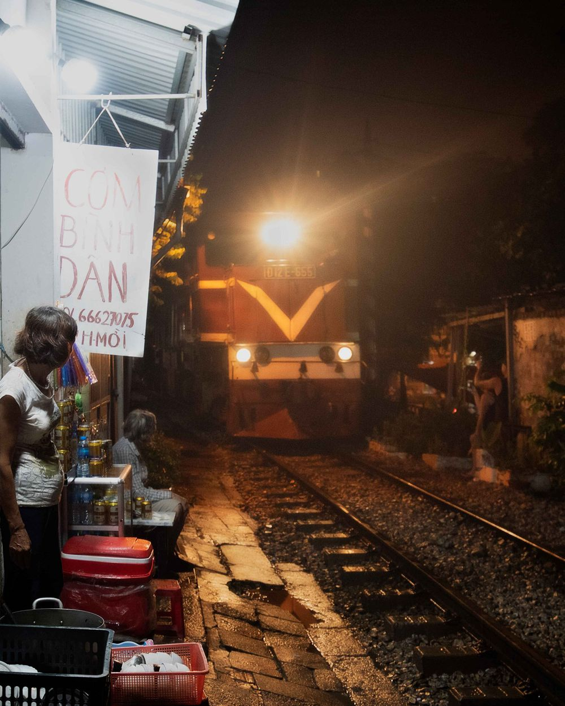

Igor Belyaev
Étudiant en informatique,
en cours de développement.

L3 d'informatique à Hanoï, en double diplôme avec l'Université de Lille. Je me prépare à un master orienté cloud et DevOps.
À propos
Ce qui m'intéresse, c'est ce qui se passe une fois le code écrit : le déployer, le surveiller, le faire tenir quand le trafic augmente.
Je suis en troisième année de licence d'informatique, dans le cadre d'un double diplôme entre l'Université de Lille et l'USTH, à Hanoï.
C'est en cours de réseaux que j'ai compris que l'infrastructure m'attirait plus que l'application elle-même. Ce site me sert de terrain d'entraînement, et je vise un master orienté cloud et DevOps.
- Actuellement
- Licence 3 Informatique, USTH, Hanoï
- Objectif
- Master cloud & DevOps, rentrée 2027
- Langues
- Russe, français (C1), anglais (B2)
Le parcours
Cinq vues, de Berck à Hanoï. La dernière n'est pas encore exposée.
-
1

Berck
2020 – 2023
Baccalauréat général, lycée Jan Lavezzari
-
2

Amiens
2023 – 2024
Classe préparatoire MP2I, lycée Louis Thuillier
-
3

Lille
2024 – 2026
Licence 1 Informatique – Mathématiques, puis Licence 2 Informatique, Université de Lille
-
4

Hanoï
2026 – 2027 · en ce moment
Licence 3 Informatique, double diplôme Université de Lille × USTH
-
5
Master
2027 –
La suite : un master orienté cloud et DevOps. Vue pas encore exposée.
Planche contact
Hors de l'écran, je fais de la photo. Ces vues sont provisoires, les miennes arrivent ; cliquez sur une vue pour l'agrandir.
Compétences
Je pratique
- Java
- SQL
- Linux
- Git
J'apprends
- Docker
- nginx
- GitHub Actions
Langues
- Russe langue maternelle
- Français C1
- Anglais B2
Ce site
Un tirage passe par trois bains : révélateur, arrêt, fixateur. Ce site aussi : build, test, publication.
Une page écrite à la main, sans framework. À chaque git push, GitHub Actions construit
une image Docker (nginx, sans les droits root, conteneur en lecture seule), vérifie que les pages,
les en-têtes et la page 404 répondent, publie l'image sur ghcr.io, puis met cette page en ligne
sur GitHub Pages.
Chaque image porte le hash de son commit : on peut revenir à n'importe quelle version.
Version affichée : copie locale
Écrire
Une question sur mon parcours, un stage, un projet ? Écrivez-moi.